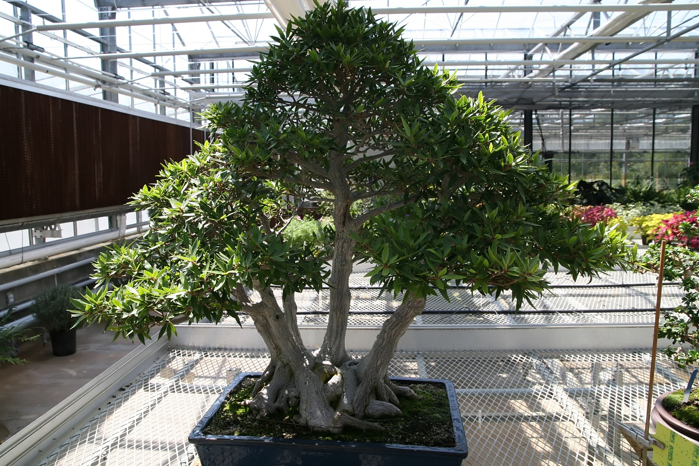
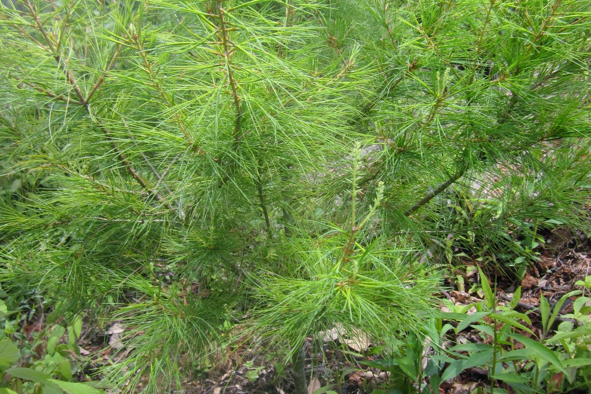
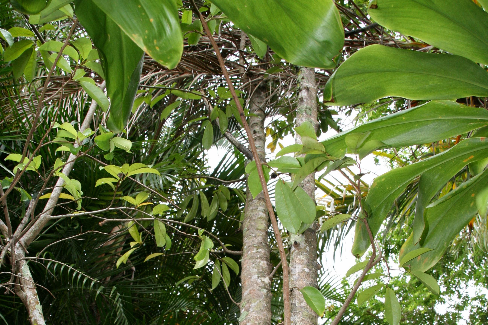

Dona para reforestar los bosques de América
|  |
Ficus maxima, $3/árbolVisto en América central y el Caribe, produce frutos y hojas consumidos para varios pájaros y mamíferos. |
|  |
Pinus chiapensis, $1/árbolEspecie de pino blanco nativa de México y Guatemala, puede llegar hasta los 35 metros de altura. |
|  |
Annona muricata, $2/árbolÁrbol pequeño, de 3 a 8 metros de altura. También conocido como guanábano. |